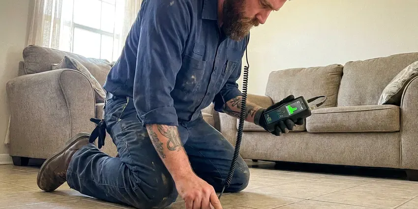

Sewer Line Inspection in Farmington Hills, MI
Dealing with slow drains or foul odors in Farmington Hills, MI? Our sewer line inspection service pinpoints the exact cause of your plumbing problems quickly and accurately.
- Clear Pricing
- Depth and Location Marking
- Modern Camera Technology
- Recorded HD Video Included

See Inside Your Sewer Line Before Small Problems Grow in Farmington Hills, MI.
Call now to schedule a camera inspection and get a recorded video of your sewer lateral.
Reliable Sewer Line Inspection Services in Farmington Hills, MI
CHV Plumbing offers detailed sewer line inspection services to homeowners in Farmington Hills, MI. We use high-resolution video cameras to navigate your sewer pipes, identifying blockages, cracks, root intrusions and other potential issues without invasive digging.
Our expertise includes:
- HD push camera inspection of 2 to 8 inch sewer lines
- Identifying root intrusion and pipe cracks
- High-resolution video camera scopes

Additional Plumbing Maintenance Services in Farmington Hills, MI
Our maintenance and specialty plumbing services in Farmington Hills, MI protect your home year-round and extend the life of every system.


Customers
Why Choose CHV Plumbing for Sewer Line Inspection in Farmington Hills, MI?
Understanding the condition of your sewer lines is essential for preventing costly future repairs and maintaining your property's value. Our detailed inspections provide peace of mind and practical next steps.
- Cost-Effective, By accurately diagnosing the problem, we help you avoid needless excavation and repairs.
- Plain Explanations, We explain the findings in everyday language and recommend practical next steps.
- Exact Locations, We mark the depth and location of each problem so repairs are targeted.
Citywide Coverage
From the busy downtown to the quiet suburban streets, our plumbing experts cover all of Farmington Hills for thorough sewer line inspections. We are your local choice for dependable plumbing diagnostics.
Experienced Team
Our technicians have inspected thousands of feet of sewer pipe and know how to read every type of defect. They can tell the difference between minor scale and a structural break.
Safety-First Approach
At CHV Plumbing, safety and code compliance are paramount during every sewer line inspection. We adhere to all local Farmington Hills and Michigan plumbing codes, so our work meets the highest standards.
Trusted Certified Farmington Hills Plumbing Services Professionals
At CHV Plumbing, we take pride in providing certified plumbing services throughout Farmington Hills, MI. Backed by recognized industry credentials, our experienced plumbers combine technical skill with genuine customer care. Whether it is repair, installation, or maintenance, we follow strict safety and quality standards to deliver long-lasting results you can trust.
Call Us Now PHCC Plumbing Contractor Recognition
PHCC Plumbing Contractor Recognition Better Business Bureau (BBB) Accreditation
Better Business Bureau (BBB) Accreditation Angi Certified Pro
Angi Certified Pro ISO 9001 Quality Management Certification
ISO 9001 Quality Management CertificationAdvanced Sewer Line Inspection Services in Farmington Hills, MI
Sewer Line Inspection Cost Comparison in Farmington Hills, MI
A standard residential sewer camera inspection usually costs $150 to $400. Inspections that require clearing first or roof access may cost more. Compared with sewer repairs that can run $3,000 to $15,000 or more, an inspection is a small investment. It can save you from buying a home with a hidden sewer problem.

Cast Iron and Clay Pipe Condition Assessment in Farmington Hills
Many older homes have cast iron drain lines under the floor and clay sewer laterals outside. Cast iron can corrode and develop scale, cracks and channeling along the bottom of the pipe. Clay joints shift and let roots in. Our camera inspection shows how much life the pipe has left so you can plan repairs on your timeline.
Preventative Maintenance Inspections in Farmington Hills
Scheduling regular preventative maintenance sewer line inspections can extend the life of your plumbing system and avoid surprise emergencies. For homes in Farmington Hills, especially those with aging infrastructure or large trees, an annual inspection can identify minor issues like grease buildup or small cracks before they become major ruptures. This proactive approach saves you money and stress in the long run, ensuring drains running smoothly year-round.
Sewer Scope for Slow Drains in Farmington Hills
If you are experiencing constantly slow drains or recurring clogs, a sewer scope inspection can pinpoint the exact cause. Instead of guessing, our camera can show whether the issue is a simple blockage, a pipe belly or more serious damage like a collapse. This precise diagnosis in Farmington Hills allows us to recommend the most effective and least invasive repair, saving you from unnecessary digging or repeated efforts.
Video Camera Inspection for Blockages in Farmington Hills
When drains slow down or stop completely, a blockage is often the culprit. Our sewer camera inspection can pinpoint exactly where the blockage is located and what's causing it, whether it's grease buildup, foreign objects or sediment. This precision allows us to perform targeted clearing without unnecessary digging, saving you time and money. We can navigate bends and junctions to get a full view of the pipe's interior.
Pre-Purchase Sewer Line Inspections in Farmington Hills
Buying a home is a major investment. Don't let hidden sewer line problems surprise you after closing. CHV Plumbing offers pre-purchase sewer line inspections in Farmington Hills to give prospective homeowners a clear understanding of the property's underground plumbing health. This inspection can reveal costly issues like collapsed pipes, misaligned joints or old cast iron pipes, providing useful leverage during negotiations.
Root Intrusion Inspection in Farmington Hills, MI
Roots from shade trees, ornamental trees and thirsty shrubs seek out moisture in sewer joints. Over time they can fill the pipe and cause repeat backups. Our camera shows exactly where roots enter and how much of the pipe they block. We then recommend cleaning, jetting or a lasting repair like lining.

Post-Repair Sewer Inspections in Farmington Hills, MI
After a sewer line repair or replacement, a post-repair inspection is essential to verify the quality of the work. CHV Plumbing can conduct an independent inspection to confirm that the new pipes are correctly installed, connections are secure and there are no remaining issues or debris. This provides assurance that the repair was successful and meets all the necessary plumbing standards in Farmington Hills, MI.
Sewer Line Inspection Near Me in Farmington Hills, MI
When you search for 'sewer line inspection near me' in Farmington Hills, MI, you want a local company that understands the plumbing challenges of the area. CHV Plumbing is your trusted local expert, equipped with the knowledge and tools to quickly respond to your needs. We are familiar with the various types of sewer systems found throughout Farmington Hills.
Our team is always ready to dispatch skilled plumbers to your location for a prompt and thorough sewer line inspection. We pride ourselves on being a reliable 'near me' plumbing solution, offering efficient service and clear communication. Don't hesitate to reach out to CHV Plumbing for immediate assistance with your sewer line concerns.
CHV Plumbing at a Glance
- Licensed and insured plumbers serving Farmington Hills, MI
- 24/7 emergency service with same-day scheduling
- Upfront, flat-rate pricing before work begins
- 4.9-star rated by 670+ Michigan customers
Farmington Hills Map
Farmington Hills Information
- Population
- 82,528
- Area codes
- 248/947/734
- Service area
- Farmington Hills and communities within 40 miles
- Nearby
- Novi, Southfield, Livonia, Dearborn Heights
Shifting soil and foundation movement can stress buried pipe, so regular sewer line inspections help Farmington Hills, MI homeowners detect pipe damage early and prevent costly future repairs. Basements are the norm, so sump pumps, drain tile and foundation drainage are a big part of residential plumbing.
Expert Services
Trust our professionals for reliable CHV Plumbing solutions in Farmington Hills, MI.
Our Specialized Plumbing Services in Farmington Hills, MI
At CHV Plumbing, we provide a complete range of plumbing services across Farmington Hills, MI. From leak detection to full system installations, our team ensures fast, precise, and affordable service for both residential and commercial properties. Explore our core services below:


How Our Sewer Line Inspection Process Works in Farmington Hills, MI
CHV Plumbing makes sewer line inspection straightforward and stress-free for homeowners and businesses in Farmington Hills, MI.
Request a Quote
Contact CHV Plumbing by calling (810) 380-5918 or filling out our online form to schedule your sewer line inspection. We'll discuss your concerns and set up a convenient time for our team to visit your property.
Camera Insertion
Our skilled technician will insert a high-resolution, waterproof camera into your sewer line, usually through a clean-out access point. The camera is maneuvered through the pipes, transmitting live video footage to a monitor above ground.
Detailed Analysis
We carefully watch the video feed for any signs of damage, blockages, root intrusion, corrosion or other anomalies. Our equipment also allows us to pinpoint the exact location and depth of any identified issues.
Frequently Asked Questions About Sewer Line Inspection in Farmington Hills
The cost of a sewer line inspection in Farmington Hills, MI usually ranges from $200 to $500. This price can vary based on the length of the line, accessibility and the complexity of the plumbing system. Factors like emergency service or detailed mapping can affect the final cost.
Homes with older pipes or trees nearby benefit from an inspection every few years. Any home with recurring backups should be inspected right away. Commercial properties often schedule yearly inspections.
We can often inspect through a roof vent or by removing a toilet. If neither works, we can install a cleanout to code, which also makes future maintenance simpler. We discuss options before starting.
Yes. Repairs we perform, including spot repairs, lining and replacement, carry a written workmanship warranty. Materials include manufacturer warranties.
Yes, especially for homes more than 20 years old or with large trees in the yard. Standard home inspections usually do not include a sewer camera. Finding a problem before closing can save you thousands.
We use professional HD push cameras from manufacturers like RIDGID and other leading brands, with built-in sondes for locating. Our cameras record video and capture still images. This equipment works in lines from 2 to 8 inches in diameter.
Multiple slow drains, gurgling toilets, sewage odors and backups in the lowest fixtures are common signs. Wet or sunken spots in the yard over the sewer path can also point to a problem. An inspection shows the cause.
A camera can find roots, cracks, breaks, bellies, offsets, grease buildup, scale and foreign objects. It also shows the pipe material and overall condition. We mark the location of each problem.
What People Are Saying About Our Plumbing Experts?

Mark T.
When our office needed drain cleaning, CHV Plumbing provided quick, reliable service. The plumber arrived on time and made sure every drain flowed perfectly before leaving. Very satisfied.
Drain Cleaning · Southfield, MI
Laura S.
I scheduled a water heater replacement, and the team made the process smooth and affordable. The new unit works perfectly, and they cleaned up after completing the job.
Water Heater Replacement · Livonia, MI
Patricia H.
We had a slab leak that two other companies could not find. CHV Plumbing located it in under an hour, explained our options, and the price matched the quote to the dollar.
Slab Leak Repair · Royal Oak, MI
Robert G.
The trenchless sewer replacement saved our front yard. They walked us through the camera inspection footage first so we knew exactly what we were paying for.
Sewer Line Replacement · Westland, MI
Emily R.
I called CHV Plumbing for plumbing repair, and the technician was fast, polite, and thorough. They explained the problem clearly and fixed it the same day. I will definitely hire them again. Highly recommended!
Plumbing Repair · Farmington Hills, MISofia M.
Two new toilets installed in one visit, no mess left behind, and the tech even adjusted a faucet he noticed was dripping. Fair pricing and really friendly.
Toilet Installation · Farmington Hills, MI